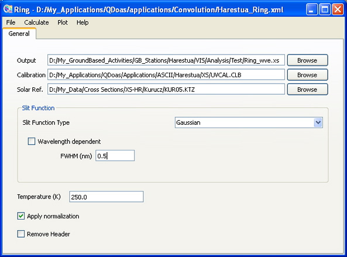
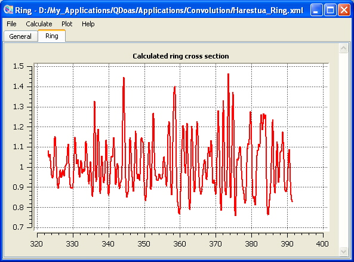

QDOAS Ring Tool (ring)
The so-called Ring effect arises in the atmosphere due to inelastic scattering processes (mainly Rotational Raman Scattering - RRS by molecular O2 and N2). Roughly speaking, it manifests itself by a broadening of the solar and atmospheric spectral features present in measured spectra. This broadening typically reduces the depth of thin solar and atmospheric absorption features by several percents. Hence, it has a strong impact on spectroscopic measurements using the DOAS method and requires appropriate correction to be implemented in retrieval algorithms. This is especially true for minor absorbers like BrO or OClO, for which weak absorption features can be completely masked by Ring structures.
In DOAS, the Ring effect is usually accounted for as an absorber. The QDOAS Ring tool calculates Ring cross-sections using a simple method [Chance and Spurr, 1997]. See the Description of Algorithms part of the QDOAS Software User manual for further information on the Ring effect.
Example of configuration of the ring tool
 |
 |
QDOAS requires :
- the final grid on which the ring cross-section must be calculated
- a high-resolution solar spectrum;
- the slit function to use for the convolution : user-defined slit functions and analytical line shapes (Gaussian, Lorentzian, Voigt and error functions) are accepted. The wavelength dependency of the line shape (Gaussian or error function) characterized by the wavelength calibration procedure can be saved from the plot page in order to be accounted for the convolution.
The effect of a change in temperature is small. Generally 250K is a good approximation for the atmospheric temperature at which most of the RRS is taking place. The normalization of the Raman spectrum is optional (Wagner et al., 2010).
As the calculated ring cross-section is accounted as an absorber, it is recommended to give the name of the output file in the format imposed by QDOAS : cross-section files names must imperatively start with the symbol name as prefix followed by the underscore character !
The ring cross-section is calculated as the ratio of the rotational Raman spectrum by the solar spectrum (R/S). The output file is an ASCII file with four columns :
- the input wavelength calibration;
- the calculated ring cross-section;
- the interpolated Raman spectrum;
- the convolved solar spectrum.
When this file is used as cross-section for spectra analysis, QDOAS loads only the two first columns except if the Convolve Ring action is requested (see the Molecules page of Analysis windows properties). In this case, the program uses the information on the slit function retrieved from the wavelength calibration procedure or from the slit function page to convolve separately the Raman and the solar spectra then the calculated ratio is introduced in the fit.